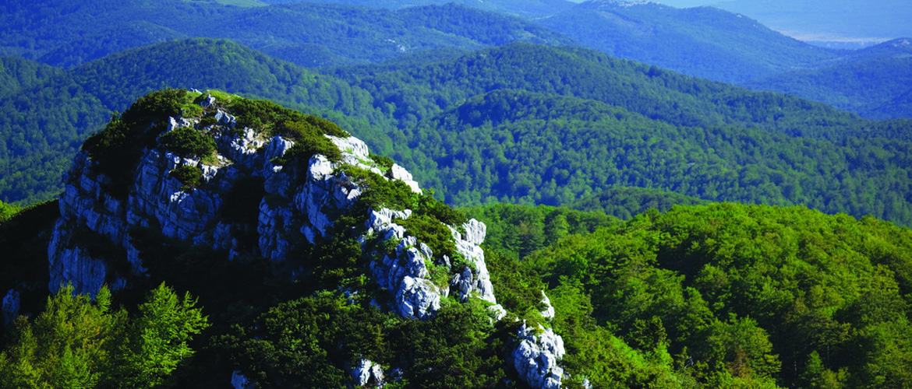

Kako do Risnjaka?
Za posjetitelje, Risnjak je vrlo dostupno područje. Do svih atrakcija dolazi se jednostavno i bez posebnih priprema ili opreme, doli izletničke znatiželje i žudnje za boravkom u prirodi. Tako se do izvora Kupe, krškog fenomena, stiže pješačkim stazama iz sela Razloge, Hrvatsko ili Kupari.
Do Schlosserova doma na Risnjaku vodi nekoliko planinarskih staza čiji je završetak otkriće prirode. Putem je moguće vidjeti divljač na atraktivnim lokalitetima. Moguć je i sportski ribolov, dakako, uz dozvolu. Sve što se ulovi, vraća se u rijeku.
Vrhovi Risnjaka
Iz najšumovitijeg prostora Hrvatske, Gorskog kotara, ogoljeni i kameni izdižu se masivi Risnjak (1528 m) i Snježnik (1506 m). Vrhovi su im udaljeni tek tri kilometra pa se doimaju kao kameni blizanci ponikli iz šumskog zelenila.
Risnjački je masiv ujednačenijeg krajolika, što se može iščitati iz naziva njegovih vrhova – Sjeverni Mali Risnjak (1434 m) i Južni Mali Risnjak (1248 m). I njihovi su vrhovi bliski susjedi, udaljeni tek 1,8 kilometara. Snježnik, pak, pripada izduženoj gorskoj kosi s nižim vrhovima: Međuvrhi (1460 m), Guslica (1490 m) i Planina (1426 m).